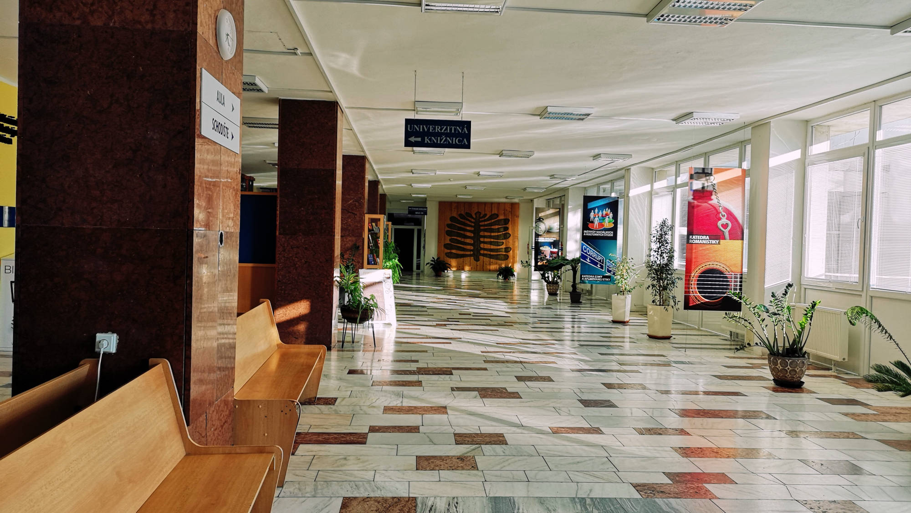
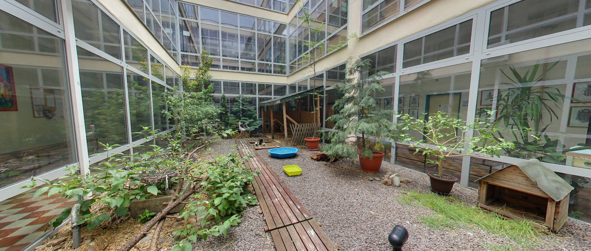
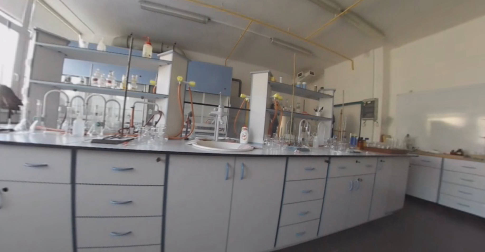
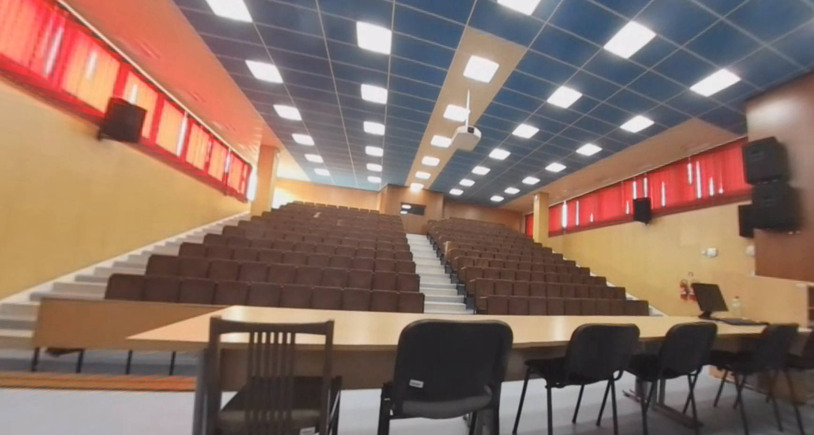

Prízemie fakulty
Vestibul budovy
Prechod ku študentskej obývačke
Študentská obývačka
Priestor pred aulou
Aula
Univerzitná knižnica
Areál pred fakultou
Prvé poschodie
Katedra informatiky
Miestnosť 134
Miestnosť 137
Prechod katedrou informatiky
Priestory pre zamestnancov katedry
Katedra historie - Priestory pre zamestnancov
Od schodiska ku katedre histórie
Od katedry informatiky ku schodisku
Od schodiska ku katedre biológie
Katedra biológie a ekológie
Od katedry k biologie ku KTVS
Telocvična fakulty
Druhé poschodie
Prechod ku katedre matematiky
Katedra matematiky
Od katedry matematiky ku schodisku
Katedra techniky a technológií
Katedra chémie
Chemické laboratórium
Katedra fyziky
Od schodiska ku katedre fyziky
Tretie poschodie
Katedra geografie a geológie
Od schodiska cez katedru geografie
Miestnosť 313
O projekte
Virtuálna prehliadka
free html web templates

Prízemie
fakulty
Vestibul budovy
Prechod ku študentskej obývačke
Študentská obývačka
Priestor aulou
Aula
Univerzitná knižnica
Areál pred fakultou

Prvé poschodie
fakulty
Katedra informatiky
Katedra historie - Priestory pre zamestnancov
Od schodiska ku katedre histórie
Od katedry informatiky ku schodisku
Od schodiska ku katedre biológie
Katedra biológie a ekológie
Od katedry k biologie ku KTVS
Telocvična fakulty

Druhé poschodie
fakulty
Prechod ku katedre matematiky
Katedra matematiky
Od katedry matematiky ku schodisku
Katedra techniky a technológií
Katedra chémie
Chemické laboratórium
Katedra fyziky
Od schodiska ku katedre fyziky

Tretie poschodie
fakulty
Katedra geografie a geológie
Od schodiska cez katedru geografie
Miestnosť 313
Previous
Next